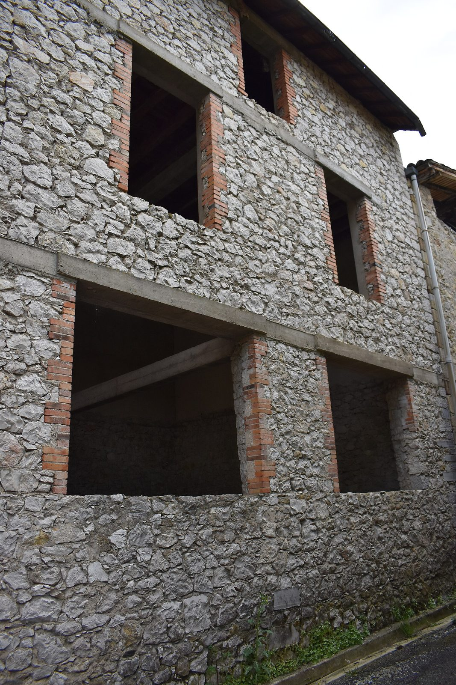

Declaration
Adresse, type de bien, photos, etat apparent, objectif du proprietaire.
Proprietaires
TVF aide les proprietaires a qualifier un logement, commerce, batiment ou terrain inutilise, puis a etudier un scenario de valorisation encadre.
Enjeu
Un bien vacant perd de la valeur d'usage, peut se degrader et reste souvent difficile a remettre en mouvement seul. TVF propose un premier cadre pour comprendre le potentiel, les limites et les usages possibles.
Methode
Chaque demande suit une logique progressive. Une demande ne vaut pas acceptation automatique.
Adresse, type de bien, photos, etat apparent, objectif du proprietaire.
Analyse des informations disponibles et des pieces manquantes.
Visite ou orientation vers une personne competente si necessaire.
Logement, local associatif, commerce, atelier ou occupation temporaire.
Duree, usage, responsabilites, assurance, travaux, suivi et restitution.
Cadre
La convention depend de l'etat du bien, de l'investissement, du projet, du risque et de l'accord du proprietaire.
Faire glisser le tableau sur mobile.
| Forme | Principe | A verifier |
|---|---|---|
| Usage temporaire | TVF ou un porteur encadre utilise le bien pendant une duree definie. | Etat du bien, securite, assurance, duree, travaux autorises. |
| Valorisation partagee | Le bien est remis en usage avec un modele a definir par convention. | Cadre juridique, fiscalite, responsabilites, autorisations. |
| Orientation professionnelle | TVF aide a qualifier puis oriente vers un professionnel habilite. | Activite reglementee, mandat, carte professionnelle si necessaire. |

Patrimoine
L'objectif n'est pas de forcer une solution, mais de construire une decision claire : ce qui est possible, ce qui ne l'est pas, ce qui doit etre chiffre et ce qui doit etre securise.
Ce que TVF peut faire
TVF peut aider un proprietaire a transformer une situation bloquee en dossier lisible : rassembler les informations, qualifier l'etat apparent du bien, identifier les usages possibles, reperer les pieces manquantes et preparer un echange avec les bons interlocuteurs.
L'objectif est de reduire l'incertitude avant toute depense importante. Le proprietaire conserve la decision finale : TVF apporte une methode, un cadre de cooperation et une capacite de mise en relation.
Analyse des premieres informations, photos, adresse, usage possible et contraintes a verifier.
Logement temporaire, atelier, local associatif, commerce de proximite ou stockage encadre.
Droits, duree, responsabilites, assurance, suivi, restitution et conditions de sortie.
Pieces utiles
Plus le dossier est precis, plus TVF peut orienter rapidement la suite. Les pieces ci-dessous ne sont pas toutes obligatoires au premier contact, mais elles structurent l'instruction.
Faire glisser le tableau sur mobile.
| Piece | Pourquoi elle est utile | Moment |
|---|---|---|
| Adresse complete et photos | Comprendre le contexte, l'acces, l'etat apparent et l'environnement immediat. | Premier contact |
| Titre de propriete ou justificatif | Verifier que la personne est habilitee a discuter du bien. | Avant convention |
| Diagnostics disponibles | Identifier les points de vigilance : energie, plomb, amiante, securite, humidite. | Instruction |
| Plans, surfaces, ancien usage | Evaluer les usages possibles et les besoins de travaux. | Instruction |
| Contraintes connues | Copropriete, indivision, servitudes, peril, assurance, occupation, fiscalite. | Avant decision |
Limites
TVF ne promet pas une renovation immediate, un revenu garanti ou une prise en charge automatique. Les dossiers sont selectionnes selon leur faisabilite, leur utilite territoriale, le niveau de travaux, les risques, les financements mobilisables et le cadre juridique possible.
Les travaux lourds, la grosse maconnerie, les situations de danger ou les operations relevant d'une activite reglementee necessitent des professionnels habilites. TVF peut orienter, coordonner ou accompagner, mais ne remplace pas les obligations legales.